SVN是Subversion的简称，是一个开放源代码的版本控制系统，相较于RCS、CVS，它采用了分支管理系统，它的设计目标就是取代CVS。互联网上很多版本控制服务已从CVS迁移到Subversion。说得简单一点SVN就是用于多个人共同开发同一个项目，共用资源的目的。
服务端安装
visualsvn下载地址：https://www.visualsvn.com/downloads/，选择：
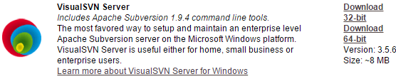
下载后开始安装，一路next，直到：
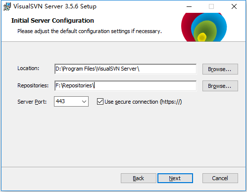
选择仓库地址和端口号，然后继续next即可。
客户端安装
tortoisesvn下载地址：https://tortoisesvn.net/downloads.html，安装过程一路next即可。
tortoisesvn语言包，tortoisesvn下载地址下面可选择安装对应的语言包：
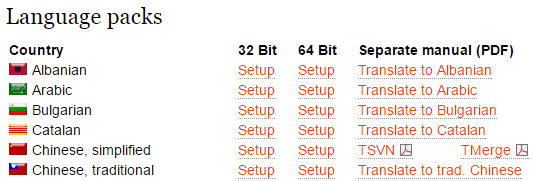
服务端配置
新增repository仓库
打开VisualSvn server,如下图所示新建一个repository：
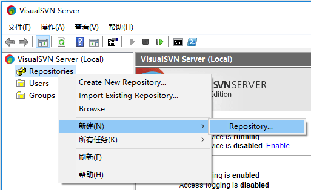
填写仓库名称：
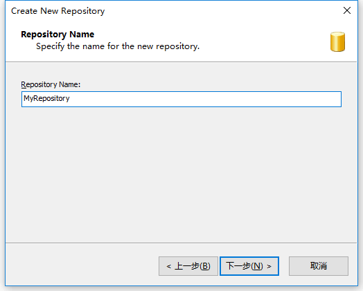
新建完后左边目录如下图所示：
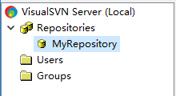
创建项目文件夹
右键新建好的MyRepository，选择新建 → Floder…：
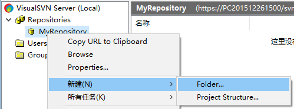
填写Floder名称：

点击ok即可。创建完后：
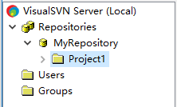
创建用户
这里我们创建两个开发者账号：developer1和developer2，两个测试人员：tester1和tester2。
点击Users → Create User：
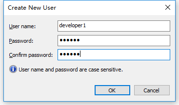
创建好developer1后再执行同样操作创建剩余的账号，创建完后如图所示：
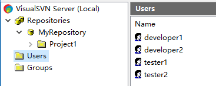
创建用户群
这里我们建立两个群：开发者群和测试人员群：
点击Groups → Create Group…：
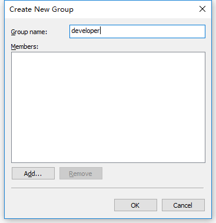
点击Add按钮向群中添加用户：
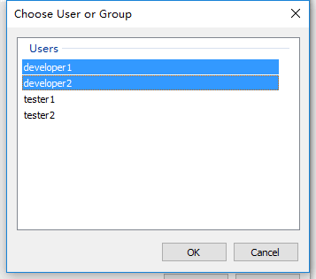
点击ok后就创建好了developer群并添加了相关人员，创建测试群操作一样，创建好后如下图所示：
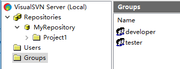
设置权限
右击项目文件夹Project1，选择properties：
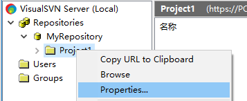
弹出框点击Add添加用户群：
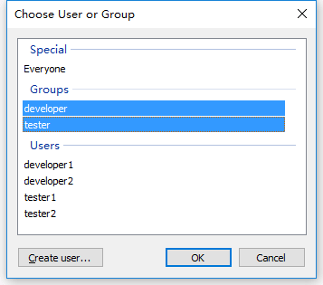
点击ok后如下图所示设置用户群权限：
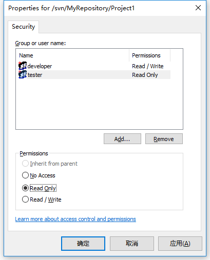
因为测试人员不参与开发，所以将其权限设置为Read Only即可。
使用tortoisesvn导入项目
右击需要导入的项目，选择导入：
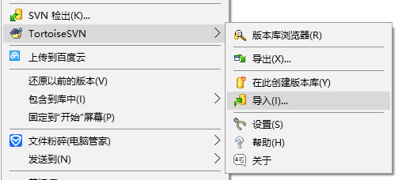
弹出框：
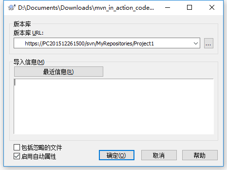
其中URL来源于之前在服务端新建的项目文件夹的URL地址，获取方法为：
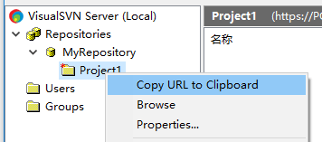
点击确定后即可向服务器导入项目：
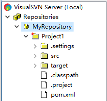
使用tortoisesvn导出项目
在需要导出项目的路径下右键选择SVN检出，然后弹出：
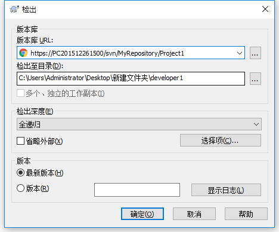
点击确定后弹出账号密码填写框，这里我们分别使用develop1和developer2检出：
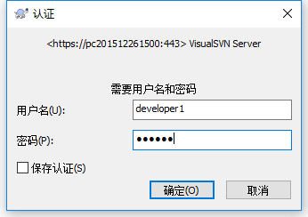
检出后：
SVN提交
在developer1文件夹下新建一个readme.txt文件，然后选中该文件右击选择加入：
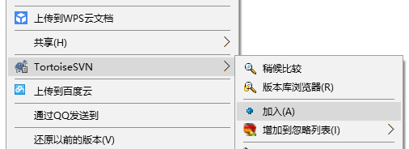
完成后会发现readme.txt上新增了一个加号的图标：
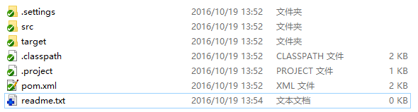
此文件可以提交到SVN库里了。选中文件右键选择SVN提交：
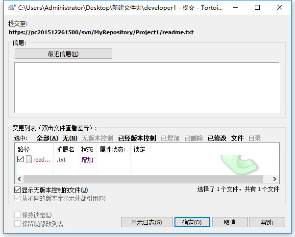
可以在信息框里填写修改信息，点击确定后readme.txt即可被提交到SVN库：
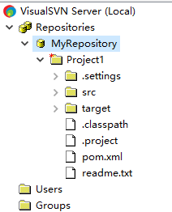
SVN更新
developer1提交了新文件，现在在developer2文件夹下更新此文件：
右键developer2文件夹，选择SVN更新，弹出填写账号密码框，填写developer2账号密码即可。
更新后developer2文件夹同步了readme.txt文件：
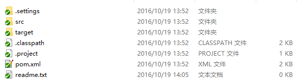
解决冲突
冲突来源：比如developer1修改了readme.txt文件的内容，并且提交了。这时候developer2并没有去更新developer1提交的内容，修改的文件也为readme.txt，developer2修改完提交时就会发现版本冲突了，如下图所示：
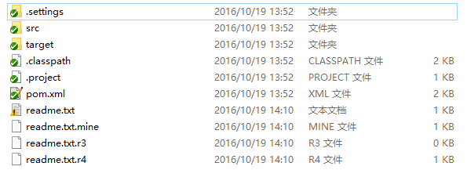
冲突的文件被标记问感叹号，并且多出了3个文件。解决冲突有两种办法：
1.选择冲突文件，右键选择SVN还原，这样项目就会被还原到你修改前的状态。这种做法缺点显而易见，那就是你修改部分的代码变没了，所以选择这种方法前，请注意备份好自己修改部分的源代码。
2.选择冲突文件，右键选择编辑冲突：
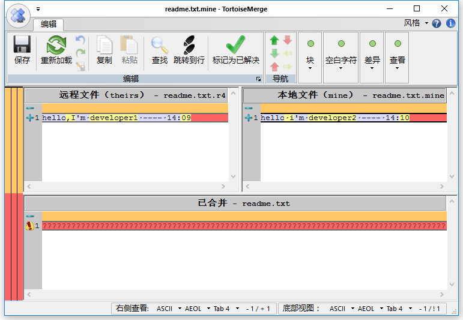
红色部分即为冲突部分，可以和提交此文件的开发者商量，将商量好后的代码放置于已合并部分即可：
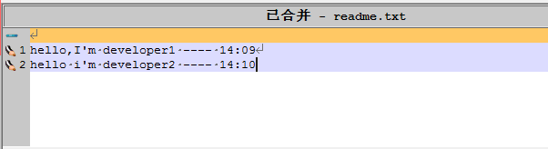
点击保存后，多出来的3个文件本删除了，这时候将readme.txt提交即可。
验证权限
使用tester1的账号导出项目后，在项目里添加一个modify.txt文件，然后加入，提交：
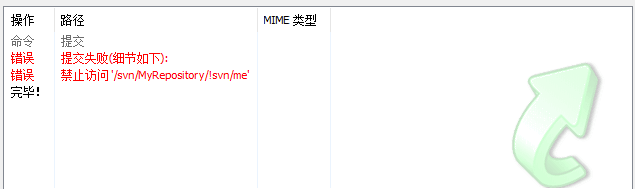
操作限制。